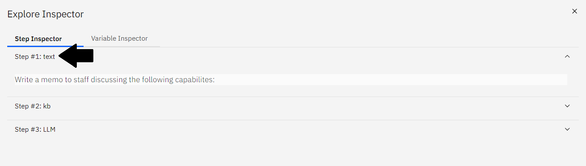
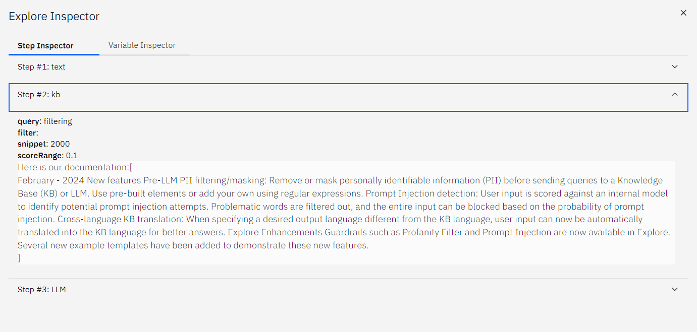
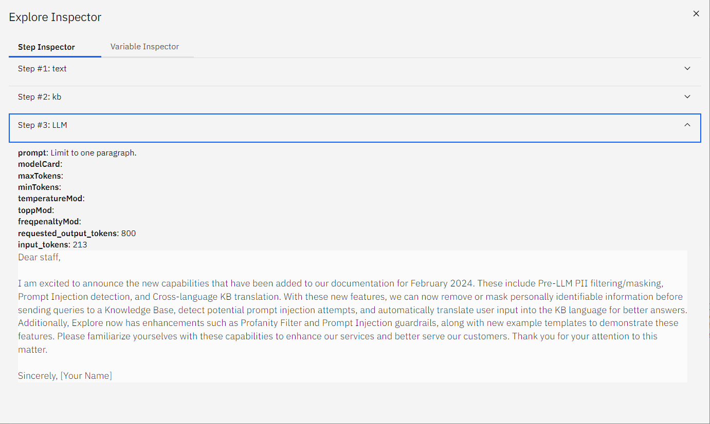

3.2 - Example Templates
NeuralSeek's mAIstro offers several adaptable example templates with a variety of capabilities best suited to your use case.
Load Template
The introductory screen of NeuralSeek's mAIstro feature will show the options for Example Templates and User Templates.
- Click on Examples Templates, then choose the Write a Memo option.
If you have navigated out of the introductory screen, then click the Load button at the bottom of the screen to access the same options.
{kind=link}
{kind=link}
Populated Nodes
Inside the Visual Editor, the example flow will populate and show three nodes. Let's explore these further.
{kind=link}
Text Node
The first node of the template flow is a Text node.
- Click on the node box to show the properties panel. Inside, is a pre-written prompt in natural language that states
Write a memo to staff discussing the following capabilites:.
{kind=link}
KB Search Node
The second node of the template flow is a KB Search node.
- Click on the node box to show the properties panel.
- Using keywords, run a query directly against the connected KnowledgeBase. In this example, we'll replace "cognos analytics" with
filtering.
{kind=link}
{kind=link}
Send to LLM Node
The third node of the template flow is a Send to LLM node.
{kind=link}
Evaluate the mAIstro Flow
Let's run our flow!
- Click the blue Evaluate button on the bottom bar.
- Notice the generated content appears in the lower panel, including a header, subject line, bulleted key features, and a few paragraphs of text.
{kind=link}
Configure the LLM Node
Click on the Send to LLM node to show the properties panel.
- Using natural language, optionally prepend an additional prompt to the Large Language Model. For example, add
Limit to one paragraph. - Click the blue Evaluate button to generate a new output.
Notice that this output is significantly shorter and formatted as a single paragraph.
{kind=link}

Debug the Flow
Click on the bug icon in the top right corner to see the full path of the evaluation, plus all the context variables.
- Click on each step to expand the full evaluation.
- Step #1: text
- The natural language prompt is shown.
- 
- Step #2: kb
- The contents generated show the resulting information pulled from our source documentation based on the prompted query.
- 
- Step #3: LLM
- Notice the contents generated here are the same as the resulting contents from clicking the Evaluate button. This is due to it being the final step in the flow.
- The generated contents show a one paragraph memo to our staff based on the contents generated in Step #2, just as the prompt indicates.
- 
{kind=link}
{kind=link}
{kind=link}
Download Generated Contents
Optionally, you can also download it in MS Word or CSV formats.
- Click the Microsoft Word option next to Output Format to download the newly generated content as an MS Word document.
{kind=link}
{kind=link}